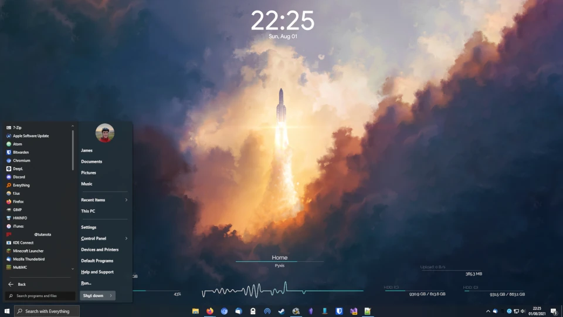

Setup
I'm always interested in seeing what other people use, so here's my current setup and some thoughts on it:
Hardware
Desktop (Built Summer 2019)
Ryzen 5 3600x - I should've just gotten the 3600.
Nvidia 2060 - More than good enough for playing indie games, which is most of what I do these days. Currently really enjoying Dead Cells.
B450 Tomahawk
16gb 3466MT/s Micron E-Die
Some cheap WiFi/Bluetooth card
Fractal Meshify C - High airflow = quiet PC
Noctua Chromax fans + NHD15S
No plans to upgrade any of this, it's plenty fast for me.
Laptop
Lenovo IdeaPad 14ARE05 which I got back in 2020 for ~£400, which was an amazing deal. The 4300u is an excellent CPU, gives great battery life (+ a 47Wh battery) while performing well enough for my needs. I've since bought another 512gb of storage for it. When I need something faster I'll probably look into something from Framework.
Phone
Currently using a OnePlus 7t. It's alright, but I wouldn't specifically recommend it. Once it stops getting updates (Not that it gets many from OnePlus anyway), I'll probably install LineageOS on it and use it until it's near breaking point. My next phone will either be a Pixel that I install GrapheneOS or CalyxOS on, or a FairPhone or similar.
Misc
Headphones: HyperX Cloud Alphas. They sound great, however the microphone generates large amounts of static. Haven't bothered to investigate why yet, might be the cable?
Monitor: 27 inch 1080p VA panel @ 72hz. A decent VA panel, but still a VA panel.
Mouse: Logitech G502. I really like it, shame that the right mouse button has serious double-clicking issues.
Keyboard: Ducky One 2. My first mechanical keyboard, and I love it. I should probably have gone for the 80% version though, I never actually use the numpad.
Software
Currently running windows 10 on both my machines, however I want to move to linux wherever possible. I've decided I'm not upgrading to windows 11, so that gives me a few years of dual-booting to transition over.
Below is some software that I use and like, in no particular order Wallpaper Engine, Rainmeter, Open-Shell (Fluent-Metro skin), Microsoft PowerToys, SyncThing, Notepad++, Atom, MusicBee, Obsidian (md) Thunderbird, Firefox, OBS, f.lux, Everything (Voidtools), Ungoogled Chromium, FirefoxPWA, Bitwarden, 7-Zip
